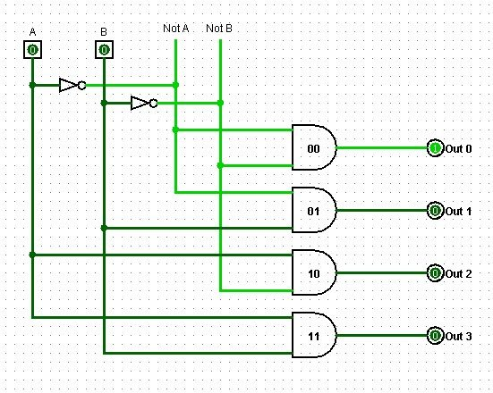
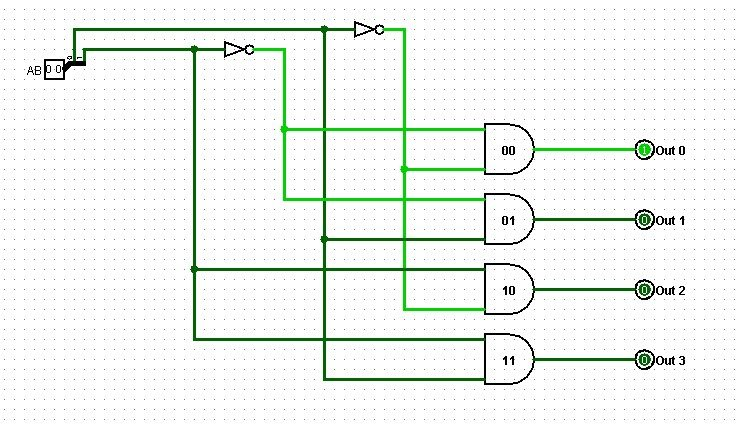
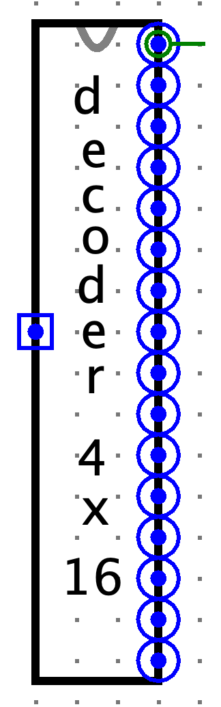

Circuits That Select
Sections 3.5–3.6 | Estimated time: ~1.45 hours
Decoders branch off §3.1 rather than off the adder chain. If carry propagation has not clicked yet, you can work through this page first and come back — nothing here needs the adder.
3.5 Decoders: Turning a Code into a Selection
The adder is one of the week's two families — circuits that compute. This is the other family: circuits that select.
Here is the problem they solve. A processor has registers, and an instruction needs to say which one to write to. Memory has locations, and a load needs to say which one to read. In both cases you have a small binary code and you need to activate exactly one thing out of many.
A decoder does that. It takes an n-bit code and raises exactly one of its 2n output lines — the one the code names. Every other output stays at 0.
It answers the question "which one?"
How it is built
The construction is the same idea at every width, and it comes straight out of Boolean algebra:
- Split each input into both polarities. Run each input bit through a NOT gate so you have both the bit and its inverse available — both
AandA'. - One AND gate per output. Each output gets an AND gate wired to the exact combination of true and inverted inputs that identifies it.
Output 0 is the one that fires when every input is 0, so its AND gate takes all the inverted inputs: A'B'. Output 3 fires when both inputs are 1, so it takes both true inputs: AB. Output 1 takes A'B, output 2 takes AB'.
Each AND gate is a minterm — one specific combination, and no other. That is exactly the Boolean vocabulary from Week 2, doing real work.


DECODER_2TO4 should take — sel is one 2-bit pin.Wider decoders extend the pattern
Nothing about the method changes as the decoder gets wider. Only the counts do.
| Decoder | Inputs | Outputs | AND gates | Inputs per AND gate | NOT gates |
|---|---|---|---|---|---|
DECODER_2TO4 | 2 | 4 | 4 | 2 | 2 |
DECODER_3TO8 | 3 | 8 | 8 | 3 | 3 |
DECODER_4TO16 | 4 | 16 | 16 | 4 | 4 |
The rule for an n-input decoder: 2n AND gates of n inputs each, plus n inverters. Add one input line and the number of outputs doubles.
You may find sources that show a 4×16 decoder built from two 3×8 decoders wired together. Do not build yours that way.
Cascading is a workaround from an era when decoders came as fixed-size physical chips and engineers combined whatever they could buy. In Logisim you simply build the decoder you need. It is also a technique that requires an enable input, which the decoder you are building does not have.
Extend the pattern: four inputs, eight polarities, sixteen 4-input AND gates.
What doubling costs
Look at that table one more time, and then extrapolate past it.
A real memory address is not 4 bits. Suppose it were 16. A 16-input decoder would need 65,536 AND gates, each with 16 inputs, to select one of 65,536 locations. That is an absurd circuit — and 16 bits is a small address by modern standards.
So real memory does not decode in one dimension. It decodes in two, which is a trick you will use yourself in Week 8 and which is the reason you are building the 4×16 decoder now. More on that below the simulator.
Why you build the 4×16 decoder twice
Here is the two-dimensional arrangement that avoids the 65,536-gate problem, and the reason DECODER_4TO16 is on your assignment.
In Week 8 you build RAM as a 16 × 16 matrix. An 8-bit address arrives, and instead of feeding one enormous decoder it is split in half:
- The high 4 bits go to one 4×16 decoder — it selects the row.
- The low 4 bits go to a second 4×16 decoder — it selects the column.
- The byte that is actually addressed is the one whose row line and column line are both high.
Two decoders of 16 AND gates each — 32 gates of 4 inputs — select one of 256 locations. A single decoder for the same 8-bit address would need 256 AND gates of 8 inputs. That is the saving, and it is why memory has been organised in a grid since the beginning.
0001 1010: the high nibble 0001 selects row 1, the low nibble 1010 selects column 10. One byte sits where they cross.The matrix is designed for 256 bytes, but in your Week 8 build only the first 2 rows are actually populated: 2 rows × 16 columns × 8 bits = 256 bits = 32 bytes of real storage. Logisim Classic becomes unusably slow with the full matrix wired, and 32 bytes is enough to run real programs.
This is worth stating rather than hiding, because it is an honest engineering constraint and it previews something real: address space and physical memory are different things. Every machine you have ever used can address more memory than it has installed.

3.6 Multiplexers, and How They Differ from Decoders
There is a second selection circuit, and the difference between it and the decoder is the most-confused distinction in this material. It is worth getting exactly right the first time, because both circuits appear inside the CPU you build later, doing different jobs.
A multiplexer — a mux — takes several data inputs plus a select code, and passes one of those inputs through to a single output.
It answers "which value?"
Compare that to the decoder, which answers "which one?" The difference sounds small in English. It is not small in hardware.
The contrast
| Decoder | Multiplexer | |
|---|---|---|
| Inputs | n select lines (a code) | 2n data inputs + n select lines |
| Outputs | 2n lines, exactly one high | 1 output |
| Does data pass through? | No — outputs are selection signals | Yes — one input reaches the output |
| Answers | "Which one?" | "Which value?" |
A decoder's output is a signal that says which, never the data itself.
Nothing flows through a decoder. Its output lines are enables — they go and switch something else on. A multiplexer is the opposite: data goes in one side and comes out the other, and the select code decides whose data it was.
They are duals, which is where the confusion comes from
The two circuits are closely related, and the relationship is worth understanding rather than avoiding:
- A decoder fans one code out to many lines. A multiplexer funnels many lines down to one. They point in opposite directions.
- A decoder with an enable input behaves as a demultiplexer — it routes the enable signal to one of many destinations.
- A multiplexer can be built from a decoder plus some gating: use the decoder to raise one line, AND each data input with its line, then OR the results together.
That last point is the one that matters, and it is where sloppy sources go wrong. A decoder is a component of a multiplexer. It is never a kind of multiplexer. The relationship runs one way, and reversing it is not a simplification — it is an error that will cost you later, when you need to reason about what is actually travelling on a wire.
The convention in this course
Decoders handle control and addressing: which register, which memory location, which ALU operation. A decoder output is always an enable line reaching some other circuit.
Multiplexers handle data-path routing, where several sources feed one destination — choosing between an ALU result and a value from memory to write back into a register, for instance.
You will meet both again doing exactly these jobs. Every decoder in this machine is doing selection; nothing is ever routed through one.
Decoders, multiplexers and encoders are all covered in Unit 3: Fundamentals of Digital Logic Design in Saylor CS301. Log into your CS301 course page and navigate to Unit 3 for the definitions. The extend-the-pattern construction, the two-dimensional RAM addressing, and the decoder-versus-multiplexer distinction as this course applies it are covered here and not there.
Check Yourself
Not graded, not recorded. This is the distinction most likely to cost you points on the assignment and on Quiz 1, so it is worth two minutes now.
Week 6 — the ALU. The 3×8 decoder selects which ALU operation reaches the output.
Week 8 — RAM. Two 4×16 decoders address the rows and columns of the memory matrix, exactly as sketched above.
Weeks 10–13 — the datapath. The 2×4 decoders select which register the processor is reading from or writing to.
You will see how each of those works when you build it. For now it is enough to know the parts have somewhere to go.
One short page left this week: encoders, comparators, and what you now own.